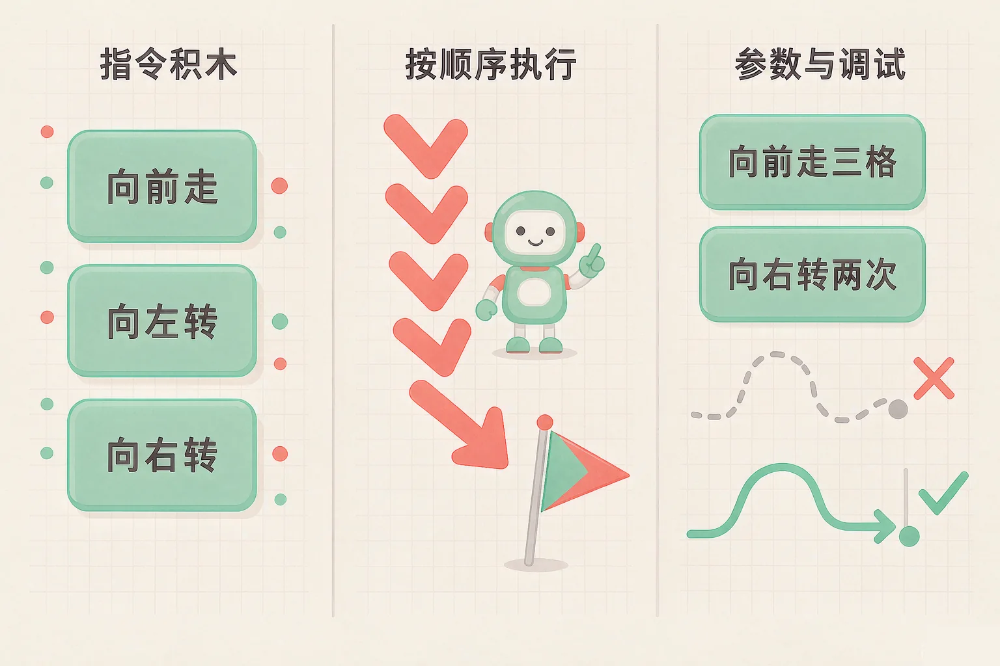
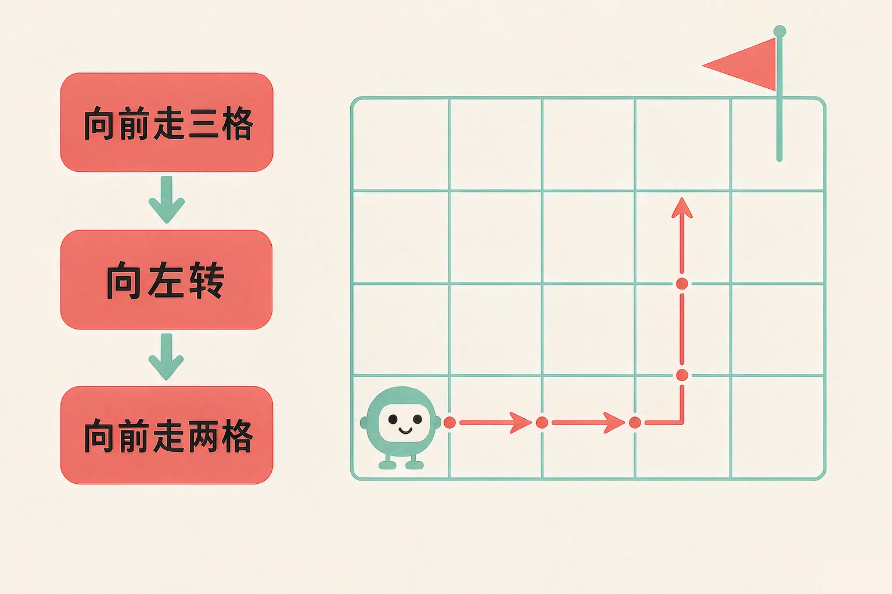
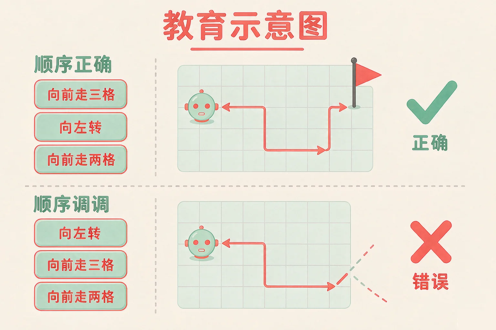

Gallery
v1.0.0 · skill v7.22.0
小学四年级 · 算法与程序
小角色看不见你，也猜不到你的想法——你该怎么让它走到小旗那里？

选一个你真正好奇的问题，后面的动手活动都会围着它转。
选择或输入后，这节课会围绕你的问题展开。
先凭直觉选一个，选完立刻看到解释——错了也没关系，正好知道要重点听哪里。
1. 积木程序里的指令，计算机是怎么执行的？
按顺序一块接一块执行，是程序最基本的工作方式。错因提醒：常见错误是以为计算机能自己挑重点——它不会看着办，只会严格按你排好的顺序来。
2. 小角色头朝右边站着，执行「向右转」以后，它朝哪边？
转向是在它自己现在朝向的基础上转九十度：头朝右向右转，就变成朝下。错因提醒：容易把你自己面朝的方向和它的方向搞混——它转的是自己，不是你的左右。
3. 积木上写着「向前走 3 格」，把它改成 2 会怎么样？
数字是这块积木的参数，参数一变，效果就变。错因提醒：不少同学误认为这个数字只管快慢——它决定的是走多少格，不是走多快。
为什么要学这一课？
我们平时请别人帮忙，说一句「把书递过来」就够了（And）；可计算机不会猜，也看不见你的表情，它只认一条一条写清楚的指令（But）；所以我们要学会把动作拼成积木、按顺序排好，这就叫程序（Therefore）。
把要做的事，一块积木一块积木按顺序排起来，计算机就从最上面一块开始，一块接一块地做下去。
① 一块积木一个动作
「向前走」「向左转」「向右转」，各是一块积木。
② 从上到下执行
计算机从第一块开始，做完一块才做下一块。
③ 顺序变了结果就变
同样几块积木，换一下顺序，走到的地方完全不同。

🔍 深层理解 换个角度再看一遍这件事，看看能不能说出背后的原理。
看见它：程序的样子很朴素：一列积木，从上往下。可小角色走的每一格，都能在里头找到对应的一块。
解释它：为什么顺序这么要紧？因为每一块积木都改变了小角色的状态——位置或者朝向。前一块变了，后一块的结果自然跟着变。
迁移它：生活里的很多事也是这样排的：洗衣机先注水再转桶，如果先转桶，衣服还是干的。顺序，就是事情能不能做成的关键。
小角色站在左下角、头朝右边，小旗在它的右上方。点积木加入程序，再点「运行」，看它一格一格走过去。
先加一块积木，再点运行试试。
同一块积木，上面填的数字不一样，效果就完全不同。这个数字叫参数。

以为「向右转」就是转到屏幕的右边。其实小角色头朝下的时候向右转，转完是朝左——它转的永远是自己。判断时先看它的头朝哪边，再想往哪边转。
现在程序里只有两块积木：一块「向前走 N 格」，一块「向右转 X 次」。拖动滑块，看小角色停在哪里、头朝哪边。
小挑战
调出两个参数，让小角色正好站在小旗上，而且头朝上。
题目：小角色在左下角，头朝右。程序是：① 向前走 1 格 ② 向前走 1 格 ③ 向左转 ④ 向前走 1 格 ⑤ 向前走 1 格。它会走到哪里？头朝哪边？
只数了「向前走」的块数，算出「一共走了四格」，却忘了中间那块转向积木已经让它换了方向。最常见的做法是：一边走一边在心里画，或者干脆在方格纸上画一遍。
先凭直觉选一个，选完立刻看到解释——错了也没关系，正好知道要重点听哪里。
1. 小角色在起点、头朝右，小旗在它右边 3 格。下面哪段程序能让它走到小旗？
它本来就朝右，直接向前走三格就到了。错因提醒：常见错误是习惯性先加一块转向积木——方向没搞清，越转越偏。
2. 「向左转」和「向右转」这两块积木的意思是：
转向参照的是它自己的头朝哪边，跟屏幕的左右无关。错因提醒：把它当成「转到屏幕某一边」，是这一课最容易搞混的地方。
3. 程序运行时，小角色走出格子了。最可能的原因是：
走出格子说明它在某个方向走过头了，回到程序里数一数格数、看一眼转向就能找到。错因提醒：别急着把程序全删掉——错通常只在一块积木上。
下面这段程序走不到小旗。请你点一下那块转向积木，把它换成另一个方向，再运行看看。
先点「运行这段程序」，看看它现在走到哪里。
改完以后，说给同桌听：
为什么只换了一块积木，走出来的路线就完全不一样了？如果换成「向左转」还是走不到，你会先检查哪一块？
先凭直觉选一个，选完立刻看到解释——错了也没关系，正好知道要重点听哪里。
1. 扫地机器人的程序是「向前走 5 格，向右转，向前走 5 格」。它总撞到同一面墙，最要紧的是改哪里？
走过头或转向不对，都会让它一头撞上去。回到程序里数格数、看转向就能改对。错因提醒：遇到不对就全部重写，是常见错误——程序调试只要改动那一块。
2. 遥控小车的程序是「向前走 3 格，向左转，向前走 2 格」。如果把「向左转」这一块删掉，小车会：
少了转向，后面那块「向前走」就变成朝原来的方向走，位置全变了。错因提醒：别误认为「少一块没多大关系」——程序里少一块，结果往往就不同了。
3. 你排的程序每次都让小角色停在离小旗差一格的地方。最好的下一步是：
单步执行能让每一步都看得见，最容易找出是哪一块的问题。错因提醒：「碰运气改一改」听起来省事，其实更慢——先看清在哪一步出错，再动手。
回到开头那个小角色：它猜不到你的心思，却也从不偷懒。你把积木排对、数字填对，它就一格一格，走到你要它去的地方——这就是程序。
给别人讲一遍：请用「积木、顺序、参数」这三个词，说清楚你是怎么让小角色走到小旗那里的。
再动一动手：画出来——在方格纸上画出一条路线，在每一步旁边写上对应的积木。
三层练习，做完第一、二层就算通关；第三层留给愿意继续探索的同学。
⭐ 基础巩固（必做）
⭐⭐ 能力应用（必做）
⭐⭐⭐ 迁移挑战（选做）
左边是学它之前要先会的，右边是学会之后可以继续探索的，下面是同一领域的伙伴知识。
图谱正在加载：首次进入需下载知识索引（约 1–3 秒），加载完成后本行会自动消失。